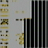

GlitchDexJP/C:253
From Glitch City Wiki
Jump to navigationJump to search(↑ Back to the GlitchDex index.)
| ← Previous glitch Pokémon | Current glitch Pokémon | Next Pokémon → |
|---|---|---|
| ????? (FC) | タマゴ (FD) | ????? (FE) |
Please note that some of the data described here may not be fully reliable if it depends on the contents of writable memory, such as RAM; WRAM; SRAM.
| タマゴ | |
Front: Back:  | |
| Bulbapedia link | |
| Equivalent glitch Pokémon | タマゴ (Gold/Silver) |
| Equivalent Pokémon (Generation I) | |
| Index number (hex) | FD |
| Index number (dec) | 253 |
| Pokédex number (Family) |
253 |
| Pokédex marker byte | |
| Breeding result (when glitch Pokémon is female or paired with Ditto) | |
| Type(s) | (Varies) |
| Category | ないからだ。 |
| Base happiness | |
| Egg group | |
| Color | Gold |
| Catch rate constant | |
| Experience group | |
| Experience yield | |
| Height | 18.1m |
| Weight | □18.4kg |
| Footprint | |
| Gender ratio | |
| Wild held item | |
| Sprite dimensions | |
タマゴ (romaji: "tamago", meaning "egg") is a glitch Pokémon in Pokémon Crystal (Japanese), and one of the variations of Generation II glitch Egg.
It is not known whether stat-wise if it functions the same as the English Generation II glitch Eggs (such as GlitchDex/GS:253, but it is likely).
Pokédex entry
| This article or section is a stub. You can help Glitch City Wiki wiki by expanding it. |